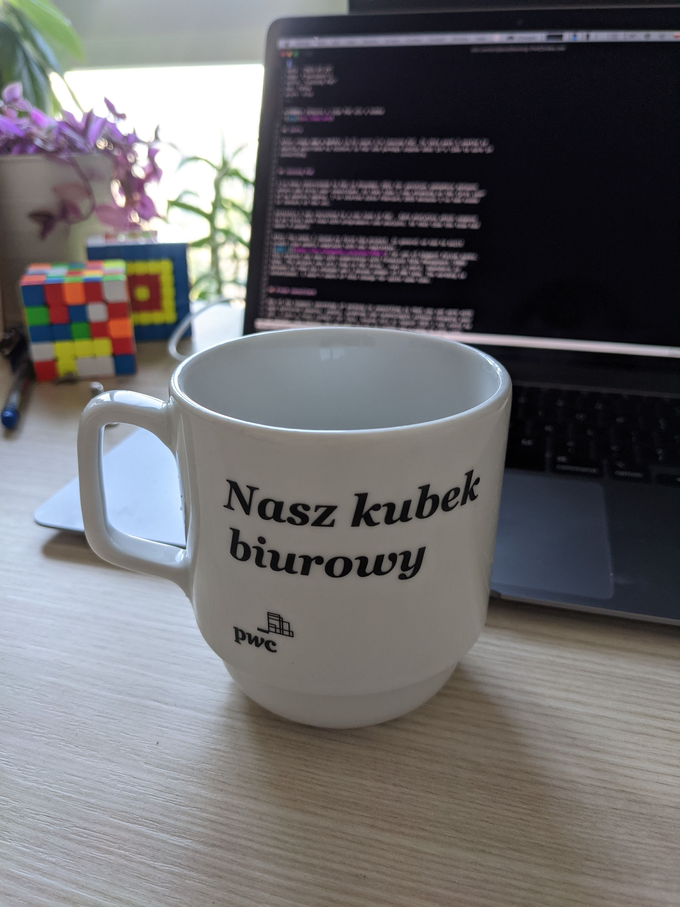

Leaving PwC

Intro
After six and a half (6.5) years I’m leaving PwC. In this post I wanted to shortly described my history in PwC and perhaps expose what it’s like to work in consulting.
All of the following are my recollections and my thoughts about working in PwC. On the publish date I’m no longer PwC employee. All opinions are my own and does not represent PwC in any way. Furthermore the following is very local focused. Other PwC offices in other countries might be significant different. Even other teams within PwC in Warsaw might be very different. So when I’m referring to PwC I mean the direct environment I was exposed to during my days in PwC.
Joining PwC
I’ve been interviewed to PwC in December 2014 for position somewhere between intern and first year consultant. At that time I was studying on the first year of my masters degree. I’ve started since February 2015 because I’ve had exams in January at the uni.
Initially I was recruited to a new team in PwC - Data Analytics which suppose to be first tech team with programmers and analysts. At that time the team had about 8 people.
After few weeks I joined my first big project. In general we had to built credit risk models complaint with new regulation - IFRS 9 for one of biggest Polish banks. This project was done with cooperation with Financial Risk Management (FRM) team. The project was very long in PwC terms - over 3 years. Somewhere in between my team has changed and I become member of FRM team. The wording is intentional. I wasn’t aware of this change for quite some time.
Fresh consultant
One of the biggest advantage of working in consulting is that you can work with many different domains, people, problems and technologies without changing your job. I have a funny example for this. Around July or August 2015 I was asked by my manager “Hey Damian, do you want to fly to London for a week to make some dashboards in Tableau? The flight is on Monday.”. The question was asked on Thursday, prior to that Monday. I answered “Sure but I don’t know Tableau”. He answered “Tableau is easy and you got Friday and whole weekend!”. So I’ve flown, together with an intern and another consultant. Without any manager or any experienced colleague. It was unexpected for me. The whole situation was unreal. We’ve got a credit card and few days later we had to work for the client in London using completely new tools and be confident and professional. Fortunately Tableau was rather easy and we fairly knew SQL so we managed to do the job. This might be extreme example but in general there are many different projects for many different clients in variety of fields.
Usually I work from office in Warsaw on local projects or foreign projects also from local office. During my first two years in PwC, as consultant, I mostly did data analysis with T-SQL, R and Excel. Including data validation, data preparation and everything around data that will lead to building models and simulations. In technical perspective that was around 60% T-SQL, 20% Excel and 20% R. Because of many reasons very large part of writing calculations and simulations for building a model was done in T-SQL. Looking back I know that T-SQL definitely wasn’t the right tool for this. Positive side was that we pushed SQL queries to its limits. Also we had to design data schema right. Otherwise it’s really hard to test correctness. Nevertheless it was a good practice to me to write such complex algorithms in SQL, not even a programming language!
There was one quick project somewhere in 2016 which had a big impact on me. It was some simulation optimization to reduce execution time from 6-8 hours to hopefully minutes. I was asked to rewrite part of solution (2-3 algorithms) from T-SQL to C#. The methodology was fairly familiar to me but I didn’t produce any commercial code in C# before. The main idea was to rewrite T-SQL to C# and add it as C# assembly to SQL Server in form of stored procedures. Therefore interface for the client was the same but implementation was done in another technology. I’ve learned a lot on this 3-week project. I started by implementing data loading from the database and write many, many unit tests (we had to produce identical results as T-SQL version). I very much enjoyed coding in C# even though it was a new thing for me. The deadline was close and as it turned out the other dev didn’t make much of a progress. I finished my part 3 days before the deadline. At this point leading dev asked me to take over the other part of the implementation. We worked 9 hours on Saturday and from 11am on Sunday to 7am on Monday without any break. We finished implementation about 6am on Monday and thanks to unit tests we were pretty sure it was correct around 7am. Around 8am I went to sleep and leading dev had to go the bank to present and to deliver our solution. Rewritten implementation with parallel simulation in C# in the end took only few minutes to produce the result. After this project I though that this the thing I want to do. Implementation in statically typed and compiled language was luxury for me at that time.
Rough times
Date 1st January of 2018 was the date. It was the deadline of introducing IFRS 9 regulations in European banks. The fall 2017 was very stressful. We were working on finalizing credit risk models for IFRS 9 and also working together with another team on the production implementation of our models to be part of the IT application for the client.
Generally in PwC people works around 9-10 hours a day which is much more than in regular job. But at that time, I remember, we would start a day on 8-9am and work together (physically in one room) till 1-3am in the night. This period took about two weeks. After that we’ve presented our models to the client and everything was great. Around December 2017 our models was done and discussed with the client and theoretically our job was done. But practically the implementation (in the IT tool) of our model wasn’t even close to be done. So we helped with testing and even proposing the C# implementation of fixes. This also was a bit stressful because of very hard deadline and communication problems between teams.
I think that was the roughest time in my 6.5 years in PwC.
Consulting phenomena
I wanted to pause for a moment and write about very interesting phenomena. Why people in PwC work that much? Even though no one is forced to do anything.
That’s very interesting question with no simple answer. I think it’s very interesting phenomena. Most of people who I worked with in PwC are very smart so how come they work long hours without any significant compensation? I think PwC gather people who are interested in solving problems. And there are many very interesting, in many ways, problems to handle. Add to it responsibility with impossible deadline and it creates a real challenge. Most of reasonable people doesn’t want to fail. So they are put enormous effort to do the job and prove that they can do it.
By doing this you got another task with even more fetched requirements of deadline because you shift definition for new “normal”. Once again you don’t want to fail so you keep working. At the evenings, weekends and so on.
In practice no one is forced to work. You are just put in position where you have to deliver impossible task and you don’t want to fail and don’t want to complain about the task itself.
It’s no unusual the fact that project for hundreds of thousands of dollars are done with 2-3 consultants or senior consultant and manager.
Another point is that there are usually no interesting alternative to this job. For example the main alternative for colleagues from FRM is to transfer to risk team in a bank. But that is perceived as very stable and boring job.
Data Analytics (DA) was another thing. Its sub team Data Tools which is contained mostly with programmers have very different dynamic. All programmers work 8 hours a day and nothing more. Probably because they can easily change job to another interesting one. That was fascinating to me to experience this. To work in PwC and have steady and no long work hours. But this topic I’ll describe later.
Focus on technology
After around 3.5 years (2018 H2) of regular consulting projects in credit risk I started talking to my managers and directors that I’m more interested in technology rather than credit risk and modelling. Fortunately they backed me up and let me to spend around 70% of my time on internal projects focused on implementation of tools for credit risk both internal and for clients.
This was something new in FRM. It was interesting for me to work on mostly implementation. Without client meetings, Excels and long hours in the office. I also conduct few technical trainings for our team and provide internal technical consultation for other projects in our team.
Besides implementing internal R package for building scoring models we also implemented few MVPs and prototypes of applications within about a year. Occasionally I was pulled out my tech bubble to real consulting projects when there was a need but most of my time I spent on implementations. I even introduced Go programming language to FRM. We’ve made one very successful project using Go to perform simulations efficiently and the other one for backend implementation for one of the MVPs.
In fall 2019 the time has come for my project.
My project
The project was about to rewrite a tool for IFRS 9 written in Excel and Power Query to another technology for a factoring company. It was a big deal for me because of two reasons. Firstly this was the first project in FRM where we had to deliver actual application. Secondly I was designer, leading dev, tester, manager and project manager on this project.
We had to choose SQLite and R with frontend in Shiny, because of reasons. We had around 3-4 months for the project. On my team I had two interns and one consultant.
There was one hidden matter that wasn’t in the agreement but what must be done in order to rewrite application - create historical database based on the old result files. The initial tool used Excel as UI, calculation engine and the database.
Without going into details of the project I can say we’ve delivered core functionalities on time but that required extra hard work from me, including few weekends and few days in Christmas.
More important for me are lessons learned from this project and those are:
- Such a tool should not be implemented in dynamically typed language
- I don’t want to be a manager in consulting ever
- I don’t want to be a manager in tech yet
- Agreement should be structured more precisely in technical parts
Furthermore my soft skills got a boost after this project. Whole communication with the client was through me. I was responsible for dealing with client’s over interpretation of the agreement and cutting long list of features that was unfounded. I’ve made a deploy on client’s server and I was the one who presented the application for the client. On the other hand I have a project and a team to manage. Prioritizing implementation features and managing inexperienced team to hit a really short deadline was challenging. All that improve my skills that wasn’t much in use prior to that project. Even though I’m not continuing my path in management I feel like it was a good experience for me after all.
Transfer to Data Tools team
When my project was practically done I officially said that I’m leaving PwC. At this point I had three months notice period. I have four or five meetings in this regard in the first month. Finally I was convinced to transfer to Data Tools (DT) team. DT team is a subteam of Data Analytics team that I was initially recruited in PwC. The team at that time had around 25 programmers (mostly senior .NET developers), few analysts and few people in management. Data Tools team was dominated by developers. I was told that culture of work there is very different than in regular consulting. That was the key feature for me than.
They weren’t lying about that. Work culture was significantly different comparing to consulting teams and projects. Over 14 months in DT team I’ve done about 8 extra hours which is nothing comparing to my previous team. That stability was a good thing for me, especially after my second child was born (few months after I’ve joined DT team).
The work itself was also very interesting. I’ve worked on developing and maintaining deployed IFRS 9 application for an international bank. The codebase of the application was an order of magnitude bigger than my projects in financial risk. So I’ve been doing quite interesting work in very steady and comfy environment still working in PwC. I though that cannot be done. Personally I’m glad that a group of programmers effected rest of the team and introduce more “normal” work culture.
On top of that I’ve learned a ton. I had pleasure of reading a mass of source code from few projects and working with very experienced .NET programmers. Funny thing for me was that I wasn’t asked about my C# or .NET experience prior joining DT team. I guess I had a good reputation. Of course I knew C# but I had very little actual experience with writing production code in C#, like two short projects in 2016. Combining those two things has resulted as perfect environment for me to advance my .NET skills. After reading a ton of C# source code and gone through first few pull requests I felt how modern, production-ready C# code is written.
But after this very short, intensive and fascinating learning period the rest was very usual. Almost boring. Just work. At that time it was fine for me. For the first time since 2015 I had steady and predictable job. At the same time I appreciated it and I was bored.
I was bored because the area of problems, tools and technology for almost all tools implemented in DT team was known to me. What most important I knew that this realm will not change soon. There are very specific kind of applications that financial institution wants. I wanted to touch some other technical problems which doesn’t appear in financial or consulting IT world. Like distributed systems with thousands of requests per seconds and high availability.
Summary
I think that being in PwC at the beginning of the career can be very beneficial. I’m glad that I was exposed to variety of projects, clients, technologies. I’m glad that I worked with many smart people from whom I learned a lot. I’m glad that I had opportunity to being part of improving tech culture within my teams in PwC. I’m glad for interesting problems and hard deadlines after all. I’m glad that I’ve been a consultant before I become a programmer. I can see things in wider perspective. I have an idea what the management have to deal with.
But… I don’t want to continue to work in this manner for my whole life. For few years it was a good thing for my career. No necessary for my life outside work. Therefore since last year (after transition to DT team) I started to better balance work and life. Working in IT helps a lot. In pure consulting it was not possible or extremely hard.
For students who don’t really know what to do I can recommend checking out working in consulting. You can touch many fields and find out what you really want to work on.
Now I’m off to new challenges. Bye, bye PwC!